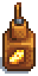

Productos Artesanales:
Los Productos Artesanales son objetos que pueden crearse utilizando Equipo Artesanal. Pueden tardar desde unas horas hasta unos días (dentro del juego) en procesarse. La mayoría de los Productos Artesanales no tienen calidad de estrella, por lo que se ignora la calidad de estrella de los ingredientes utilizados. La única excepción es el Huevo de avestruz, cuya calidad de estrella del producto artesano coincidirá con la del ingrediente.
Si se elige la profesión Artesano al llegar al nivel 10 de Agricultura, los productos artesanales valdrán un 40% más (salvo el Aceite y el Café). Los tres siropes (Jarabe de arce, Resina de roble y Brea de pino) no se benefician de la Profesión de Artesano, y no se incluyen aquí. Sin embargo, en el juego se etiquetan como "Productos Artesanales". (En cambio, su valor se ve afectado por la Profesión de Resinador).
Un producto artesanal, la Piña Colada, sólo puede obtenerse en el balneario de la Isla Jengibre los Domingos, cuando Gus atiende allí el bar.
Tiempo de procesamiento
Una hora = 60 minutos de 6 AM a 2 AM, pero 1 hora = 100 minutos de 2 AM a 6 AM.
Máquinas de producción
Las máquinas de producción fabrican productos a lo largo del tiempo sin ninguna intervención adicional.
Colmena
Una colmena produce Miel Silvestre cada 4 días.
La colmena puede producir tipos únicos de miel cuando está al alcance de una flor crecida (en un radio de 5 casillas en cualquier dirección cardinal). Cuando hay más de un tipo de flor a su alcance, tiene prioridad la más cercana.
Las colmenas se pueden colocar dentro del Invernadero, pero no producirán miel. Las flores colocadas en Macetas tampoco harán que las colmenas produzcan miel de flores.
| Imagen | Nombre | Descripción | Ingredientes | Origen de receta |
|---|---|---|---|---|
| Colmena | ¡Colócala fuera para obtener deliciosa miel! (Excepto en invierno). |
|
Agricultura nivel 3 |
 Jarabe de arce (1)
Jarabe de arce (1) | Imagen | Nombre | Descripción | Recupera | Tiempo de proceso | Disponibilidad | Precio base de venta | |
|---|---|---|---|---|---|---|---|
| Miel | Néctar dulce producido por las abejas. |
Incomestible | 6720 min (≈4 días) | Cualquier estación menos Invierno | Silvestre | 100  |
|
 Primavera Primavera |
|
|
|||||
 Verano Verano |
|
|
|||||
 Otoño Otoño |
|
|
|||||
Máquinas de procesamiento
Las máquinas de procesamiento toman un objeto y lo convierten en otro al cabo de un tiempo, normalmente de mayor valor. A diferencia de las máquinas de producción, las de procesamiento requieren que el jugador introduzca un objeto.
Tonel
Un tonel toma productos específicos y los añeja para incrementar su calidad y valor. El tiempo de añejamiento varía entre los productos. El vino es el que más tiempo requiere: 2 estaciones de envejecimiento para pasar de vino básico a vino de calidad iridio.
Nota: Se puede acelerar el tiempo de añejamiento en +1 nivel de calidad (al instante) si usas Polvo de hadas sobre el Tonel (1 Polvo de hadas por cada Tonel).
| Imagen | Nombre | Descripción | Ingredientes | Origen de receta |
|---|---|---|---|---|
 |
Tonel | Utilízalo en la bodega para envejecer productos como el vino y el queso. |
|
Mejora de la casa de campo nivel 3 |
| Imagen | Nombre | Ingrediente | Calidad Base | Calidad Plata (x 1.25)  |
Calidad Oro (x 1.5)  |
Calidad Iridio (x 2)  |
|---|---|---|---|---|---|---|
 |
Vino | Cualquier Fruta (1) | 3 x valor base de la Fruta |
(3 x base) x 1.25 Envejecido: 14 Días |
(3 x base) x 1.50 Envejecido: 14 Días Total: 28 Días |
(3 x base) x 2 Envejecido: 28 Días Total: 56 Días |
 |
Cerveza pálida | |
300 |
375 Envejecido: 9 Días |
450 Envejecido: 8 Días Total: 17 Días |
600 Envejecido: 17 Días Total: 34 Días |
 |
Cerveza pálida | |
200 |
250 Envejecido: 7 Días |
300 Envejecido: 7 Días Total: 14 Días |
400 Envejecido: 14 Días Total: 28 Días |
 |
Hidromiel | Miel (1) | 200 |
250 Envejecido: 7 Días |
300 Envejecido: 7 Días Total: 14 Días |
400 Envejecido: 14 Días Total: 28 Días |
 |
Queso |
|
230 |
287 Envejecido: 3 Días |
345 Envejecido: 4 Días Total: 7 Días |
460 Envejecido: 7 Días Total: 14 Días |
| Queso de cabra |
|
400 |
500 Envejecido: 3 Días |
600 Envejecido: 4 Días Total: 7 Días |
800 Envejecido: 7 Días Total: 14 Días |
Prensa de queso
Utilizando una Leche XXL o Leche de cabra XXL, siempre dará un Queso o Queso de cabra de calidad oro. Utilizar Leche o Leche de cabra siempre te dará los quesos de calidad normal.
| Imagen | Nombre | Descripción | Ingredientes | Origen de receta |
|---|---|---|---|---|
|  | Prensa de queso | Convierte la leche en queso. |
|
Agricultura nivel 6 |
| Imagen | Nombre | Descripción | Ingrediente | Tiempo de proceso | Precio de venta | Recupera Energia | Recupera Salud |
|---|---|---|---|---|---|---|---|
| |
Queso | Queso normal y corriente. |
|
200m (3h) |
|
|
|
| Queso de cabra | Un queso blando hecho con leche de cabra. |
|
200m (3h) |
|
|
|
Barril
Nota: Se puede acelerar el tiempo de producción al instante si usas Polvo de hadas sobre el Barril (1 Polvo de hadas por cada Barril).
| Imagen | Nombre | Descripción | Ingredientes | Origen de receta |
|---|---|---|---|---|
 |
Barril | Coloca aquí una fruta o una verdura. Al cabo del tiempo se convertirá en una bebida. |
|
Agricultura nivel 8 |
| Imagen | Nombre | Descripción | Ingrediente | Tiempo de Proceso | Precio de Venta | Recupera (Energia) | Recupera (Salud) | Extra |
|---|---|---|---|---|---|---|---|---|
| |
Cerveza | Bebe con moderación. | |
1750 mins (1-2 Días) | 200 |
50 | 22 | Velocidad(-1) |
| |
Cerveza Palida | Bebe con moderación. | |
2250 mins (1-2 Días) | 300 |
50 | 22 | Velocidad(-1) |
| |
Vino | Bebe con moderación. | Cualquier Fruta (1) | 10000 mins (≈7 Días) | 3 x Valor base de la Fruta | 50 | 22 | Velocidad(-1) |
 |
Zumo | Una bebida dulce y nutritiva. | Cualquier Vegetal (1) | 6000 mins (≈4 Días) | 2.25 x Valor base del Vegetal | 75 | 33 | Ninguno |
| |
Hidromiel | Una bebida fermentada hecha con miel. Bebe con moderación. | Miel (1) | 600 mins (10 horas) | 300 |
75 | 33 | Velocidad(-1) |
 |
Cafe | Huele de maravilla. Seguro que te da energía. | |
120 mins (2 horas) | 150 |
3 | 1 | Velocidad(-1) |
 |
Té verde | Una agradable, energizante bebida fabricada con hojas de té procesadas. | Hojas de té (1) | 180 mins (3 horas) | 100 |
13 | 5 | Energía máx. (+30) |
Telar
| Imagen | Nombre | Descripción | Ingredientes | Origen de receta |
|---|---|---|---|---|
 |
Telar | Convierte la lana virgen en tela. |
|
Agricultura nivel 7 |
| Imagen | Nombre | Descripción | Ingrediente | Tiempo de proceso | Precio de venta |
|---|---|---|---|---|---|
 |
Tela | Un rollo de tejido lanoso. |
|
|
470 |
Mayonesera
Todos los huevos se pueden convertir en Mayonesa. Con un huevo de gallina normal se obtiene una mayonesa de calidad normal, mientras que con un Huevo XXL se obtiene una mayonesa de calidad Oro. Con un Huevo dorado se obtienen tres tarros de mayonesa de calidad dorada.
Un Huevo de avestruz produce diez (10) tarros de Mayonesa a la vez con la misma calidad que el huevo utilizado. Este es el único caso en el que importa la calidad del ingrediente.
| Imagen | Nombre | Descripción | Ingredientes | Obtentción |
|---|---|---|---|---|
 |
Mayonesera | Convierte los huevos en mayonesa. |
|
Agricultura nivel 2 |
| Imagen | Nombre | Descripción | Ingredientes | Tiempo de proceso | Precio de venta | Recupera (Energia) | Recupera (Salud) |
|---|---|---|---|---|---|---|---|
 |
Mayonesa | Da ganas de untarla. |
|
3 Horas |
|
50 | 22 |
 |
Mayonesa de pato | Una mayonesa rica y amarilla. |
|
3 Horas |
|
75 | 33 |
| Mayonesa dinosaurio | Es gruesa y cremosa, con un vívido matiz verde. Huele a hierba y cuero. |
|
3 Horas |
|
126 | 56 | |
 |
Mayonesa sombría | Una pasta densa y oscura que huele a pelo quemado. |
|
3 Horas |
|
-75 |
|
Aceitera
| Imagen | Nombre | Descripción | Ingredientes | Origen de receta |
|---|---|---|---|---|
 |
Aceitera | Produce un delicioso aceite de trufa. |
|
Agricultura nivel 8 |
| Imagen | Nombre | Descripcion | Ingredientes | Tiempo de proceso | Precio de venta | Restaura Energia | Restaura Salud |
|---|---|---|---|---|---|---|---|
 |
Aceite de trufa | Un ingrediente de la cocina gourmet. | Trufa (1) | 360m (6 horas) | 1065 |
38 | 17 |
 |
Aceite | Aceite multiusos para la cocina. | Maíz (1) | 1000m (≈16.66h) | 100 |
13 | 5 |
| Semillas de girasol (1) | 3200m (≈53.33h) | ||||||
| |
60m (1 hora) |